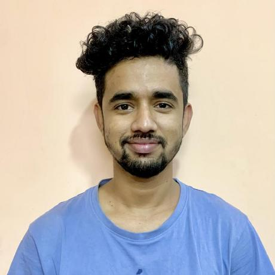

Rabin Dhamala

For the first three years since 0ct 2021, I have honed my skills as a software developer, specializing in Django and Django Rest Framework for backend API development. I have also delved into frontend technologies like Vue.js and gained experience with Node.js projects. Notably, my role at Cleavr allowed me to further develop my DevOps skills, including server maintenance, code deployment, rollback procedures, and familiarity with SSL and domain management. This diverse experience has equipped me with a comprehensive understanding of full-stack development, enabling me to contribute effectively to various aspects of software projects.
2 years back, I decided to take a year long break to pursue MSCS in US. Hence, I focused heavily on the fundamentals, OS, Databases and crafting low level tools. However, plans didn't fall out as expected and a year break turned into two. Also, I believed I would be working in bad faith to commit to a particular company only to leave it at the earliest opportunity. In the meantime, I built a basic redis-server, language simulator(Crafting Interpreter) and shell. Besides, that I heavily focused on DSA, solving over 900 leetcode problems (1770 LC rating). For the last 6 months, I have been working as a database engineer overseeing data migration for NEA (Nepal Electricity Authority) from legacy Mpower system to RMS (my current company) in Longshine Technology.
Work Experiences
Software Engineer ( Longshine Technology )
As an Implementation Engineer at Longshine, I support a large-scale data migration project for the Nepal Electricity Authority (NEA), moving data from the legacy Mpower platform to a new Revenue Management System (RMS).
Key responsibilities:
- Database migration: Analyze source and target schemas, map data, and develop migration procedures.
- SQL and PL/SQL development: Write and debug Oracle queries, stored procedures, and scripts for data transformation and validation.
- Administration and automation: Use Oracle Data Pump, Bash, cron, and SSH tools to automate exports, backups, and file transfers.
- Validation and troubleshooting: Investigate migration failures, reconcile data inconsistencies, analyze logs, and resolve database issues.
- Business domain: Work with electricity billing, revenue collection, accounting, and financial migration data.
Technology stack: Oracle Database, SQL, PL/SQL, Linux, Bash, and Python.
This role has strengthened my experience with enterprise databases, legacy-system modernization, data migration workflows, and production troubleshooting.
Software Engineer ( Uptechsys Pvt Ltd )
Here, I primarily worked as a Django Backend Developer. Here, I deployed and maintained several projects. Notably, I worked on Hamro Academy, E-Nagari, Municipal Planning Management System. I also setup the blog infrastructure system. Additionally, I improved the integration and deployment workflow by integrating a testing environment and automating deployment for several of these projects.
Software Engineer ( Cleavr )
I worked on Cleavr, a deployment platform focusing on PHP sites, Laravel, Node.js, and Adonis projects. It provided integration with GitHub, GitLab, server provisioning (Digital Ocean, AWS, Hetzner, Vultr), backups to Google and AWS storage, domain management, SSL, firewall, and notifications. Joining the project midway, The role required to take on full ownership of the project. in remote work. This involved aligning goals, improving services, and handling everything from front/backend development to customer support. I delved into DevOps, learning SSL, Nginx, load balancers, domains, system services, monitoring tools, and Bash scripting.
Our tech stack included AdonisJs (backend), Vue (frontend), and InertiaJs for monolithic architecture. I tackled various tasks like supporting new databases, UI responsiveness, frontend tweaks, implementing a complete email change system, server reboots, disk cleanup, and updates. Being part of a small team meant decision-making and suggesting improvements collaboratively. Balancing technical development with customer support, I gained insights into server maintenance and troubleshooting deployment issues, using Bash scripts for logging outputs and ensuring stable development cycles while addressing critical bugs and implementing new features.
Software Engineer ( Aayulogic )
In my role specializing in Python, particularly with Django and Django Rest Framework, I focused on backend development to create APIs for frontend functionalities. Tasks ranged from implementing an attendance penalty system and optimizing payroll generation to enhancing the recruitment process and managing onboarding for large clients. Through this, I honed my skills in Django ORM, often performing database patches and creating scripts to rectify data entry errors with significant impacts across modules.
Additionally, I delved into frontend development using Vue (Vue 2) with Vuetify for UI components and VeeValidate for client-side validation. This expanded my expertise to include JavaScript and Vue, where I utilized existing components and occasionally built new ones for specific requirements.
As my tenure progressed, I transitioned into a Junior Developer role, taking on responsibilities at the requirement level, discussing technical feasibility, prioritizing features or critical bug fixes, and reviewing code to ensure adherence to coding standards and test coverage. This evolution culminated in a promotion to Associate Engineer, where I focused on mentoring junior team members, setting expectations, providing constructive feedback, and fostering a collaborative environment conducive to growth and improvement.
Projects
Leetcode Practice
This is a DSA repository where I maintain all the problems that I solved in Leetcode. The objective is to learn Data structure and Algorithm and improve problem solving ability.
Codecrafters challenge
I completed several codecrafters challenge in December, 2023. I further worked on them from Oct 2025 - Feb 2026
The objective was to learn about the underlying technology by implementing some part of the tool itself.